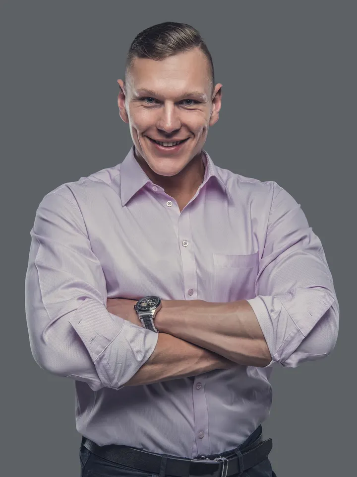
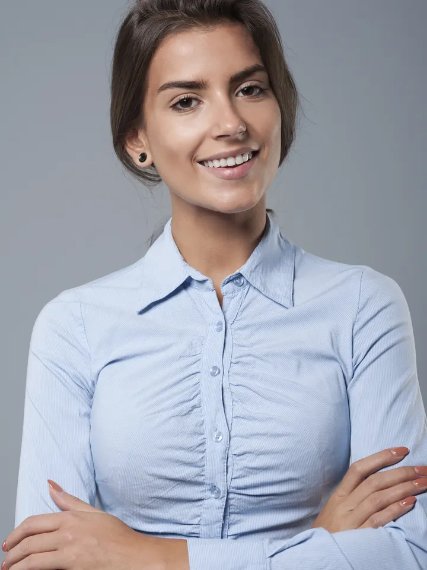
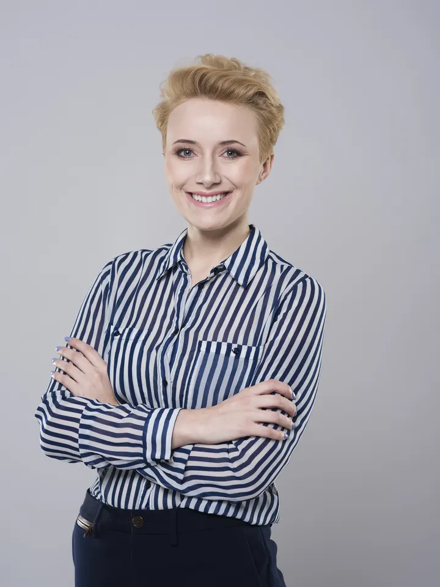
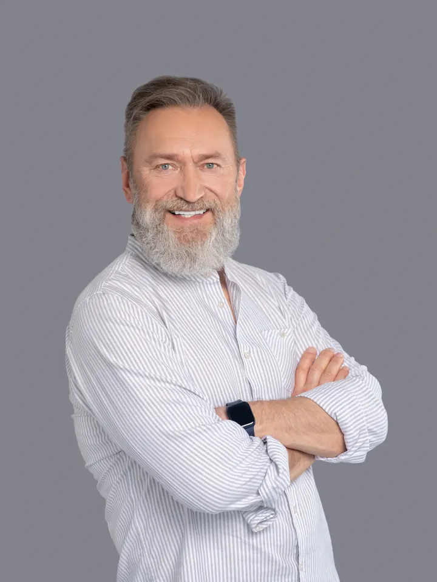

ארבעה כרטיסי צוות בשחור לבן, ועל כל אחד לוחית עם שם ותפקיד. כשהעכבר עובר על כרטיס, הצילום נצבע ומתקרב מעט, והלוחית נפתחת כלפי מעלה ומראה שני משפטים על האדם. בטלפון הלוחית נפתחת בכפתור הפלוס.
מתי משתמשים: סקשן צוות של משרד, סטודיו, קליניקה או חברה קטנה, עם שלושה עד שישה אנשים ותמונות באותו סגנון. שחור לבן במנוחה מאחד צילומים שצולמו בתנאים שונים. לא כשהצילומים לא אחידים בחיתוך (פנים במרכז, אותו גובה), ולא לצוות של עשרים, שם רשת פשוטה עם שם ותפקיד.
הדמו כאן עיצובי-ניטרלי בכוונה. כשהמהלך נכנס לפרויקט, מיובאת רק ההתנהגות: הצבעים, הרדיוסים, הפונטים והצללים יורשים את העיצוב של אותו פרויקט.
ארבעה אנשים ומשרד אחד בתל אביב. בכל פרויקט אתם מכירים את כולם, ומדברים ישירות עם מי שעושה את העבודה.

אדריכל ושותף מנהל
מלווה כל פרויקט מהסקיצה הראשונה ועד מסירת המפתח. עשרים שנה של בתים פרטיים ומבני ציבור.

מעצבת פנים
בוחרת חומרים, תאורה ורהיטים, ובונה לכל לקוח לוח השראה לפני שמזמינים משהו.

ניהול פרויקטים
מתאמת בין הקבלנים, הספקים והלקוח, ומעדכנת כל שבוע מה נעשה ומה הבא בתור.

הנדסאי ושרטוט
מכין את התוכניות להיתר ולביצוע, ומוודא שכל מידה בשרטוט נכונה גם באתר.
.pr-info יושבת בתחתית הכרטיס מעל הצילום, על var(--card), והביו בתוכה נפתח ב-grid-template-rows מ-0fr ל-1fr. בגלל שהלוחית מעוגנת לתחתית, היא גדלה כלפי מעלה ולא דוחפת את הכרטיסים שמתחת. הצילום: filter:grayscale(1) במנוחה, צבע מלא ו-scale(1.04) בפתיחה, בתוך מסגרת עם overflow:hidden. בלי JS הכל פתוח וצבעוני, כלומר הערך הסופי נמצא במארקאפ; ה-JS מוסיף is-live שסוגר ומאפיר, ומציג את כפתור הפלוס (hidden עד אז, כי בלי JS הוא לא עושה כלום). מגע ומקלדת: הכפתור מחליף is-open עם aria-expanded, והפלוס מסתובב ל-X. בעכבר הפתיחה היא בריחוף, והכפתור נשאר בשביל המקלדת. בטלפון הכרטיסים בשורה נגללת עם הצמדה (scroll-snap), כרטיס וקצת בכל מסך, במקום ארבעה כרטיסים גבוהים זה מתחת לזה. התמונות מ-Freepik ברישיון המנוי (assets/media/team/credits.json). הפחתת תנועה: בלי הגדלה, והמעברים קצרים.הקוד כאן עומד בפני עצמו. כל טוקן עיצוב נושא ברירת מחדל, מחלקות העזר של המאגר מוטמעות בו, ותגי הסקריפט מסודרים לפי הסדר הנכון. פרויקט שמגדיר --accent או --line משלו יורש אותם אוטומטית. הרכיב הזה מסתמך על dir="rtl".
/* מחלקות עזר של המאגר שהרכיב הזה משתמש בהן */
.stage{padding:var(--sec, clamp(120px, 12vw, 260px)) var(--gutter, clamp(24px, 5vw, 96px));position:relative}
.stage.tight{padding-block:clamp(48px,5vw,90px)}
.stage.full{padding-inline:0}
/* B107 · כרטיסי צוות שנצבעים ונפתחים */
.pr{display:grid;gap:clamp(28px,4vw,48px);padding:clamp(40px,6vw,96px) clamp(20px,5vw,72px);border-radius:clamp(20px,2.4vw,32px);background:var(--bg, #f7f7fa);color:var(--ink, #16182b);overflow:clip}
.pr-hd{display:grid;gap:12px;max-width:40rem}
.pr-hd h2{margin:0;font-size:clamp(30px,3.4vw,48px);font-weight:800;line-height:1.1;letter-spacing:-.01em;text-wrap:balance}
.pr-hd p{margin:0;color:var(--muted, #6a6d85);font-size:var(--fs-body, clamp(17px, 0.6vw + 0.7rem, 22px));line-height:1.6}
.pr-grid{list-style:none;margin:0;padding:0;display:grid;grid-template-columns:repeat(4,minmax(0,1fr));gap:clamp(12px,1.6vw,20px)}
.pr-card{position:relative;isolation:isolate;overflow:hidden;aspect-ratio:3/4;border-radius:24px;background:var(--card, #fff)}
.pr-ph{position:absolute;inset:0;margin:0}
.pr-ph img{display:block;width:100%;height:100%;object-fit:cover;object-position:50% 20%;transition:filter .6s cubic-bezier(.2,.6,.2,1),transform .8s cubic-bezier(.2,.6,.2,1)}
.pr-info{position:absolute;inset-inline:12px;inset-block-end:12px;z-index:1;display:grid;padding:14px 16px;border-radius:16px;background:var(--card, #fff);color:var(--ink, #16182b);box-shadow:0 1px 2px color-mix(in srgb,var(--ink, #16182b) 6%,transparent),0 6px 20px color-mix(in srgb,var(--ink, #16182b) 5%,transparent)}
.pr-top{display:grid;grid-template-columns:minmax(0,1fr) auto;align-items:center;gap:2px 12px}
.pr-top h3{margin:0;font-size:18px;font-weight:700;line-height:1.25}
.pr-role{grid-column:1;margin:0;font-size:14px;color:var(--muted, #6a6d85)}
.pr-more{grid-column:2;grid-row:1/span 2;display:grid;place-items:center;width:44px;height:44px;border:0;border-radius:50%;background:color-mix(in srgb,var(--ink, #16182b) 8%,transparent);color:var(--ink, #16182b);cursor:pointer;transition:transform .4s cubic-bezier(.2,.6,.2,1),background-color .25s cubic-bezier(.2,.6,.2,1)}
.pr-more[hidden]{display:none}
.pr-more svg{width:18px;height:18px;flex:none;fill:none;stroke:currentColor;stroke-width:2;stroke-linecap:round;stroke-linejoin:round}
.pr-more:focus-visible{outline:2px solid var(--accent, #4a3aff);outline-offset:2px}
.pr-bio{display:grid;grid-template-rows:1fr;transition:grid-template-rows .5s cubic-bezier(.2,.6,.2,1)}
.pr-bio>div{min-height:0;overflow:hidden}
.pr-bio p{margin:0;padding-top:10px;font-size:15px;line-height:1.55}
/* חי: סגור ואפור עד שפותחים */
.pr.is-live .pr-bio{grid-template-rows:0fr}
.pr.is-live .pr-ph img{filter:grayscale(1)}
.pr.is-live .pr-card.is-open .pr-bio{grid-template-rows:1fr}
.pr.is-live .pr-card.is-open .pr-ph img{filter:none;transform:scale(1.04)}
.pr.is-live .pr-card.is-open .pr-more{transform:rotate(45deg)}
@media(hover:hover) and (pointer:fine){
.pr.is-live .pr-card:hover .pr-bio{grid-template-rows:1fr}
.pr.is-live .pr-card:hover .pr-ph img{filter:none;transform:scale(1.04)}
.pr.is-live .pr-card:hover .pr-more{transform:rotate(45deg)}}
@media(prefers-reduced-motion:reduce){.pr-ph img{transition-duration:.2s}.pr.is-live .pr-card .pr-ph img{transform:none!important}.pr-bio{transition-duration:.2s}}
@media(max-width:1000px){.pr-grid{grid-template-columns:repeat(2,minmax(0,1fr))}}
@media(max-width:600px){.pr-grid{grid-auto-flow:column;grid-template-columns:none;grid-auto-columns:78%;overflow-x:auto;scroll-snap-type:x mandatory;margin-inline:-20px;padding:0 20px 8px;scroll-padding-inline:20px;scrollbar-width:none}.pr-card{scroll-snap-align:start}}<div class="stage"><section class="pr" data-pr>
<div class="pr-hd">
<h2>הצוות שילווה את הבית שלכם</h2>
<p>ארבעה אנשים ומשרד אחד בתל אביב. בכל פרויקט אתם מכירים את כולם, ומדברים ישירות עם מי שעושה את העבודה.</p>
</div>
<ul class="pr-grid">
<li class="pr-card">
<figure class="pr-ph"><img src="https://liavwebdesign-spec.github.io/motion-vault/assets/media/team/p1.webp" width="720" height="960" alt="גבר מחייך בחולצה ורודה" loading="lazy" decoding="async"></figure>
<div class="pr-info">
<div class="pr-top"><h3>אורי שחר</h3><p class="pr-role">אדריכל ושותף מנהל</p><button class="pr-more" type="button" hidden aria-expanded="false" aria-controls="pr-b0" aria-label="עוד על אורי שחר"><svg viewBox="0 0 24 24" aria-hidden="true"><path d="M12 5v14M5 12h14"/></svg></button></div>
<div class="pr-bio" id="pr-b0"><div><p>מלווה כל פרויקט מהסקיצה הראשונה ועד מסירת המפתח. עשרים שנה של בתים פרטיים ומבני ציבור.</p></div></div>
</div>
</li>
<li class="pr-card">
<figure class="pr-ph"><img src="https://liavwebdesign-spec.github.io/motion-vault/assets/media/team/p2.webp" width="720" height="960" alt="אישה בחולצה כחולה מחייכת למצלמה" loading="lazy" decoding="async"></figure>
<div class="pr-info">
<div class="pr-top"><h3>מיכל דגן</h3><p class="pr-role">מעצבת פנים</p><button class="pr-more" type="button" hidden aria-expanded="false" aria-controls="pr-b1" aria-label="עוד על מיכל דגן"><svg viewBox="0 0 24 24" aria-hidden="true"><path d="M12 5v14M5 12h14"/></svg></button></div>
<div class="pr-bio" id="pr-b1"><div><p>בוחרת חומרים, תאורה ורהיטים, ובונה לכל לקוח לוח השראה לפני שמזמינים משהו.</p></div></div>
</div>
</li>
<li class="pr-card">
<figure class="pr-ph"><img src="https://liavwebdesign-spec.github.io/motion-vault/assets/media/team/p3.webp" width="720" height="960" alt="אישה צוחקת בחולצת פסים" loading="lazy" decoding="async"></figure>
<div class="pr-info">
<div class="pr-top"><h3>נטע אלון</h3><p class="pr-role">ניהול פרויקטים</p><button class="pr-more" type="button" hidden aria-expanded="false" aria-controls="pr-b2" aria-label="עוד על נטע אלון"><svg viewBox="0 0 24 24" aria-hidden="true"><path d="M12 5v14M5 12h14"/></svg></button></div>
<div class="pr-bio" id="pr-b2"><div><p>מתאמת בין הקבלנים, הספקים והלקוח, ומעדכנת כל שבוע מה נעשה ומה הבא בתור.</p></div></div>
</div>
</li>
<li class="pr-card">
<figure class="pr-ph"><img src="https://liavwebdesign-spec.github.io/motion-vault/assets/media/team/p4.webp" width="720" height="960" alt="גבר עם זקן בחולצה לבנה" loading="lazy" decoding="async"></figure>
<div class="pr-info">
<div class="pr-top"><h3>רפי גולן</h3><p class="pr-role">הנדסאי ושרטוט</p><button class="pr-more" type="button" hidden aria-expanded="false" aria-controls="pr-b3" aria-label="עוד על רפי גולן"><svg viewBox="0 0 24 24" aria-hidden="true"><path d="M12 5v14M5 12h14"/></svg></button></div>
<div class="pr-bio" id="pr-b3"><div><p>מכין את התוכניות להיתר ולביצוע, ומוודא שכל מידה בשרטוט נכונה גם באתר.</p></div></div>
</div>
</li>
</ul>
</section></div>(function(){
const root=document.querySelector("[data-pr]");
if(!root)return;
root.classList.add("is-live"); // בלי JS הכל פתוח וצבעוני
root.querySelectorAll(".pr-more").forEach(b=>{
const card=b.closest(".pr-card");
b.hidden=false;
b.addEventListener("click",()=>{
const on=!card.classList.contains("is-open");
card.classList.toggle("is-open",on);
b.setAttribute("aria-expanded",String(on));
});
});
})();